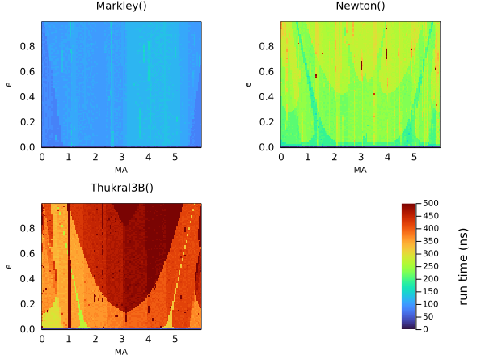

Kepler Solvers
The heart of this package is being able to take a set of Keplerian elements and output relative positions, velocities, etc.
This normaly requires solving Kepler's equation numerically. This package supports a multitude of solver algorithms that can be passed to orbitsolve:
The last of these RootsMethod, allows one to substitute any algorithm from the Roots.jl package. These include many different classical and modern root finding algorithms.chosen precision, including artibrary precision BigFloats. Using big floats with, for example, Roots.PlanetOrbits.Thukral5B and a tight tolerenace, allows you to solve orbits up to arbitrary precision.
The default choice is Auto, which currently selects Markley for all cases. The Markley algorithm is very fast, reasonably accurate, and always converges, making it a good default choice.
The Markley algorithm is a tweaked version of the algorithm from AstroLib.jl. It is non-iterative and converges with less than 1e-15 relative error across the full range of e between 0 and 1. On my laptop, this solves for a single eccentric anomaly in just 71 ns. Since it is implemented in pure Julia, there is no overhead from calling into a C or Cython compiled function and no need for vectorization.
Examples
using PlanetOrbits, BenchmarkTools
orb = orbit(a=1.2, e=0.1, M=1.0, ω=1.4, τ=0.5)
t = mjd("2025-06-23")
@benchmark orbitsolve(orb, t, PlanetOrbits.Markley())BenchmarkTools.Trial: 10000 samples with 540 evaluations per sample.
Range (min … max): 209.693 ns … 23.811 μs ┊ GC (min … max): 0.00% … 98.83%
Time (median): 211.585 ns ┊ GC (median): 0.00%
Time (mean ± σ): 223.677 ns ± 294.816 ns ┊ GC (mean ± σ): 3.29% ± 4.98%
▆█▆▃▁▁ ▃▄▂▁▁ ▁▁ ▂
██████▇▅▅▅▄▁▄▄▃▁████████▇▆▆▆▄▆▅▆▇█▇▅▆▅▅▃▄▅██▅▅▆██▇▄▄▃▁▃▁▁▃▄▅▆ █
210 ns Histogram: log(frequency) by time 278 ns <
Memory estimate: 128 bytes, allocs estimate: 1.@benchmark orbitsolve(orb, t, PlanetOrbits.Goat())BenchmarkTools.Trial: 10000 samples with 161 evaluations per sample.
Range (min … max): 654.950 ns … 156.890 μs ┊ GC (min … max): 0.00% … 99.39%
Time (median): 704.236 ns ┊ GC (median): 0.00%
Time (mean ± σ): 719.888 ns ± 1.681 μs ┊ GC (mean ± σ): 3.02% ± 1.40%
▆█▄▁ ▆█▅▄▄▂▄▅▁▁▁ ▃▃▂ ▁ ▂
████▇█▆▁▁▁▄▃▁▄███████████▇▆▆▅▄▇████▇▇███▆▆▅▅▅▆▄▄▄▄▅▅▅▄▄▅▄▁▄▄▅ █
655 ns Histogram: log(frequency) by time 854 ns <
Memory estimate: 128 bytes, allocs estimate: 1.using Roots
@benchmark orbitsolve(orb, t, PlanetOrbits.RootsMethod(Roots.Newton()))BenchmarkTools.Trial: 10000 samples with 455 evaluations per sample.
Range (min … max): 229.138 ns … 61.859 μs ┊ GC (min … max): 0.00% … 99.52%
Time (median): 231.648 ns ┊ GC (median): 0.00%
Time (mean ± σ): 260.951 ns ± 703.670 ns ┊ GC (mean ± σ): 5.00% ± 2.98%
▆█▆▁ ▁▃▃▁ ▂▃▃▃▂▃▃▃▃▂▂ ▁
████▇█▆▅▄▂▂▄▂▄▃▂█████▇▇▇▆▄▆▄▅▄▃▄▃▄████████████▆▃▃▂▆▇██▇▇▇▇█▆▇ █
229 ns Histogram: log(frequency) by time 311 ns <
Memory estimate: 128 bytes, allocs estimate: 1.using Roots
@benchmark orbitsolve(orb, t, PlanetOrbits.RootsMethod(Roots.Thukral3B()))BenchmarkTools.Trial: 10000 samples with 305 evaluations per sample.
Range (min … max): 286.246 ns … 100.724 μs ┊ GC (min … max): 0.00% … 99.52%
Time (median): 334.308 ns ┊ GC (median): 0.00%
Time (mean ± σ): 345.278 ns ± 1.216 μs ┊ GC (mean ± σ): 6.23% ± 1.98%
█
██▇▄▂▂▂▂▂▁▂▁▁▁▁▁▁▁▁▂▃▃▂▂▂▂▂▂▄▇▆▆██▆▄▄▃▄▅▄▃▂▂▂▂▂▂▂▂▂▂▃▃▂▂▂▂▂▂▂ ▃
286 ns Histogram: frequency by time 381 ns <
Memory estimate: 128 bytes, allocs estimate: 1.@benchmark orbitsolve(orb, t, PlanetOrbits.RootsMethod(Roots.A42()))BenchmarkTools.Trial: 10000 samples with 199 evaluations per sample.
Range (min … max): 429.055 ns … 154.728 μs ┊ GC (min … max): 0.00% … 99.57%
Time (median): 478.347 ns ┊ GC (median): 0.00%
Time (mean ± σ): 492.191 ns ± 1.658 μs ┊ GC (mean ± σ): 4.36% ± 1.40%
▄█▇▅▂ ▁▇█▇▅▅▅▅▄▅▅▃▂▃▃▂▁ ▁▂▂▂▁▁▁▁▁▁ ▃
█████▇▇▇▅▃▃▁▁▃▁▁▃▁▁▁▁▁█████████████████▆▆▆▃▅▃▆█████████████▆▇ █
429 ns Histogram: log(frequency) by time 552 ns <
Memory estimate: 128 bytes, allocs estimate: 1.@benchmark orbitsolve(orb, t, PlanetOrbits.RootsMethod(Roots.Bisection()))BenchmarkTools.Trial: 10000 samples with 10 evaluations per sample.
Range (min … max): 1.949 μs … 5.495 μs ┊ GC (min … max): 0.00% … 0.00%
Time (median): 1.959 μs ┊ GC (median): 0.00%
Time (mean ± σ): 2.030 μs ± 160.970 ns ┊ GC (mean ± σ): 0.00% ± 0.00%
█▁ ▅▆▄▂ ▁
██▁▃▁▄▄▄▄▅████▇▆▅▄▄▁▃▁▁▁▃▄▄▃▃▃▅█▇▇▄▄▄▃▁▃▁▁▁▁▁▁▁▁▁▁▁▁▁▁▅▇▇█▆ █
1.95 μs Histogram: log(frequency) by time 2.82 μs <
Memory estimate: 128 bytes, allocs estimate: 1.@benchmark orbitsolve(orb, t, PlanetOrbits.RootsMethod(Roots.SuperHalley()))BenchmarkTools.Trial: 10000 samples with 409 evaluations per sample.
Range (min … max): 238.298 ns … 74.503 μs ┊ GC (min … max): 0.00% … 99.53%
Time (median): 285.822 ns ┊ GC (median): 0.00%
Time (mean ± σ): 289.966 ns ± 967.546 ns ┊ GC (mean ± σ): 6.47% ± 2.20%
▇█▅▁ ▂▃▂ ▃▂▅▆▆▅▃▃▅▅▅▃ ▁▂▂▂▁▁▁▂▂▁ ▂
█████▇▅▃▃▄▁▃▁▁▃▃▄████▇▇▆▆▅▆▄▄▃▆█████████████▇▅▅▄▆▇██████████▇ █
238 ns Histogram: log(frequency) by time 324 ns <
Memory estimate: 128 bytes, allocs estimate: 1.@benchmark orbitsolve(orb, t, PlanetOrbits.RootsMethod(Roots.Brent()))BenchmarkTools.Trial: 10000 samples with 227 evaluations per sample.
Range (min … max): 332.436 ns … 134.529 μs ┊ GC (min … max): 0.00% … 99.56%
Time (median): 381.163 ns ┊ GC (median): 0.00%
Time (mean ± σ): 391.703 ns ± 1.439 μs ┊ GC (mean ± σ): 4.74% ± 1.40%
█ ▆▃
██▅▃▂▂▂▂▂▁▁▁▂▂▁▂▁▁▁▁▂▁▂▂▃▃███▆▄▄▃▃▅▅▄▃▃▃▂▂▂▂▂▂▂▂▂▂▃▃▂▂▂▂▂▂▂▂▂ ▃
332 ns Histogram: frequency by time 440 ns <
Memory estimate: 128 bytes, allocs estimate: 1.@benchmark orbitsolve(orb, t, PlanetOrbits.RootsMethod(Roots.Order2()))BenchmarkTools.Trial: 10000 samples with 254 evaluations per sample.
Range (min … max): 306.130 ns … 120.658 μs ┊ GC (min … max): 0.00% … 99.58%
Time (median): 354.882 ns ┊ GC (median): 0.00%
Time (mean ± σ): 370.974 ns ± 1.486 μs ┊ GC (mean ± σ): 6.48% ± 1.72%
▇▇▅▁ ▁▂▂ ▄▇█▇▅▂ ▁▅▆▅▃▁ ▁▂▃▂ ▁▁ ▃
████▃▆▆▅▃▃▁▃▄▁▄▁▁▃▃▁▃▄████▆██████▇██████▆▅▆▆▃▄▄▁▁▃█████▇█████ █
306 ns Histogram: log(frequency) by time 407 ns <
Memory estimate: 128 bytes, allocs estimate: 1.@benchmark orbitsolve(orb, t, PlanetOrbits.RootsMethod(Roots.AlefeldPotraShi()))BenchmarkTools.Trial: 10000 samples with 200 evaluations per sample.
Range (min … max): 412.580 ns … 155.042 μs ┊ GC (min … max): 0.00% … 99.53%
Time (median): 460.820 ns ┊ GC (median): 0.00%
Time (mean ± σ): 474.232 ns ± 1.654 μs ┊ GC (mean ± σ): 4.49% ± 1.40%
█▅ ▅▅
▃██▆▃▂▂▂▂▂▂▂▂▁▁▂▁▁▁▁▁▁▂▃███▅▆▆▄▃▅▄▃▃▃▃▃▂▂▂▂▂▂▂▂▂▃▃▃▂▂▂▂▂▂▂▂▂▂ ▃
413 ns Histogram: frequency by time 529 ns <
Memory estimate: 128 bytes, allocs estimate: 1.High precision
You can solve Kepler's equation in high precision using big floats and tightening the tolerance on the solver.
orb_big = orbit(a=big(1.2), e=big(0.1), M=big(1.0), ω=big(1.4), τ=big(0.5))
sol = orbitsolve(orb_big, big(t), PlanetOrbits.RootsMethod(Roots.Thukral5B(),rtol=1e-30,atol=1e-30,))
radvel(sol)24650.95447361446997022436542900109713321175234563222583018047585031821959181256Comparison

